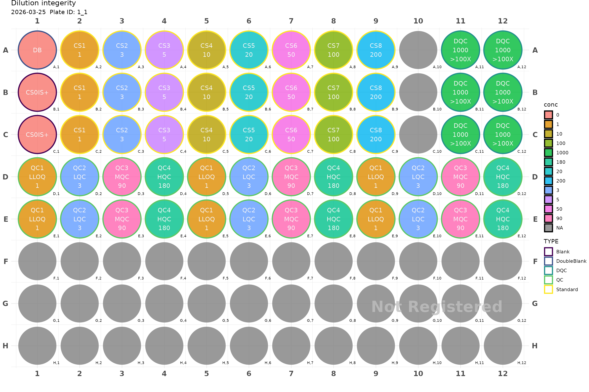

plate <- generate_96("Dilution integerity") |>
fill_scheme("v") |>
add_DB() |>
add_blank() |>
add_blank() |>
fill_scheme("h", lbound = 2, rbound = 9) |>
add_cs_curve(c(1, 3, 5, 10, 20, 50, 100, 200), rep =3) |>
fill_scheme("h", tbound = "D", bbound = "E", lbound = 1, rbound = 12) |>
add_QC(3, 90, 180, reg = T, n_qc = 6, qc_serial = F) |>
fill_scheme("h", lbound = 11, rbound = 12) |>
add_DQC(conc = 1000, 100, rep = 6)
plot(plate)
#> Plate not registered. To register, use register_plate()
#> Warning: Removed 39 rows containing missing values or values outside the scale range
#> (`geom_text()`).
register_plate(plate)For here, you may select one or more plate and generate injection sequences.
If you have different compounds with different concentrations and
wish to propagate the concentrations, you have to use the
methods tab to create a table that for all compounds
associated with your bioanalytical method. This will be used also to
match chromatographs with the correct transition.


summary tab can show the injection volume from each
well. This can help to estimate roughtly if the aliquots are enough for
that much of injections.
After filling generating the injection sequence, export it to your vendor-specific format. You can import this list directly without any further manual modification.